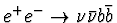

Victor F. Edneral
Institute for Nuclear Physics of Moscow State University,
Vorobievy Gory, Moscow, 119899, Russia
edneral@theory.npi.msu.su
Abstract
The report describes facilities of the CompHEP - i.e. creation of new or using of traditional models of particle interactions, an automatic generation of all tree level Feynman diagrams for a given process, squaring and analytic calculations of these diagrams with a generation of results in a REDUCE, MATHEMATICA, FORM readable form or as a FORTRAN or C program. There is developed interface with numerical integrators of generated programs along phase space and with popular packages such as the PYTHIA.
There is described also a brief illustration an usage of CompHEP for a complete tree level calculation for the

process and its comparison with the possible Higgs signal at LEP200 and Next Linear Colliders.